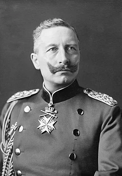

ไกเซอร์วิลเฮล์ม ที่ 2 (Wilhelm II)

เป็นจักรพรรดิองค์สุดท้ายแห่งจักรวรรดิเยอรมนี ผู้ทรงมีบทบาทสำคัญและมีส่วนผลักดันให้เยอรมนีเข้าสู่สงครามโลกครั้งที่ 1 ก่อนจะทรงสูญเสียอำนาจและต้องสละราชสมบัติในเวลาต่อมาบทบาทสำคัญในสงครามโลกครั้งที่ 1การสนับสนุนลัทธิทหารนิยม (Militarism): ทรงมุ่งเน้นขยายกองทัพเรือและกองทัพบกเยอรมันให้ยิ่งใหญ่ เพื่อแข่งขันกับมหาอำนาจอื่นอย่างอังกฤษและฝรั่งเศส ซึ่งสร้างความตึงเครียดในยุโรปการจุดชนวนสงคราม (Blank Check): หลังเหตุการณ์ลอบสังหารอาร์ชดยุก ฟรานซ์ เฟอร์ดินานด์ แห่งออสเตรียในปี ค.ศ. 1914 พระองค์ทรงให้สัญญา "เช็คเปล่า" สนับสนุนให้ออสเตรีย-ฮังการีใช้วิธีแข็งกร้าวต่อเซอร์เบีย จนลุกลามเป็นสงครามใหญ่การตัดสินใจทางยุทธศาสตร์: ในช่วงแรกของสงคราม พระองค์ทรงมีบทบาทในการอนุมัติแผนการรบ แต่เมื่อสงครามยืดเยื้อ อำนาจที่แท้จริงกลับตกไปอยู่ในมือของผู้นำทางทหาร เช่น นายพลเอริช ลูเดินดอร์ฟ และพอล ฟอน ฮินเดินบรูร์ก ทำให้พระองค์เป็นเพียงประมุขในนามการสละราชสมบัติและการลี้ภัย: เมื่อเยอรมนีพ่ายแพ้ในปลายปี ค.ศ. 1918 เกิดการปฏิวัติภายในประเทศ พระองค์ทรงถูกบีบให้สละราชสมบัติในวันที่ 9 พฤศจิกายน ค.ศ. 1918 และเสด็จลี้ภัยไปยังประเทศเนเตรแลนด์จนกระทั่งสวรรคตในปี ค.ศ. 1941